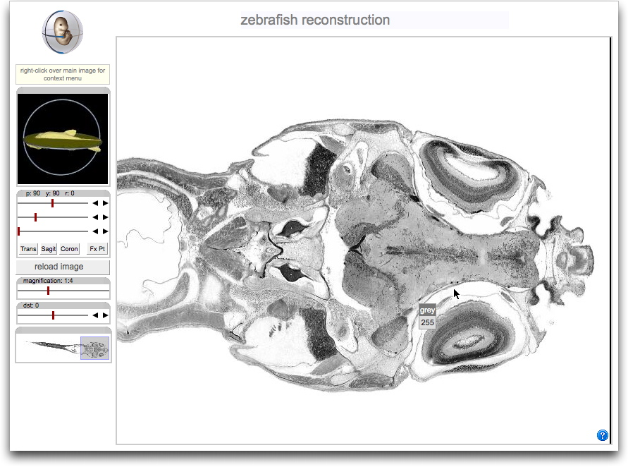

Demonstrator of 3D section views through X-ray microCT images of Zebra fish
The purpose of these demonstrator links is to show what the IIP3D server and client-side technology could provide for the presentation of X-ray microCT zebrafish atlas models to users. The data is from the PennState Zebrafish Atlas group headed by Prof Keith Cheng. The image data was provided by Xuying Xin.
The demonstrator interfaces are all based on the novel IIP3D server technology developed at the MRC Human Genetics Unit. IIP3D can handle very large image volumes (tested up to 140GB) and has a number of options for multi-layer viewing of both grey/colour image layers and graphical overlays such as anatomy or regions of gene-expression. IIP3D is being used widely in the eMouseAtlas project (www.emouseatlas.org) and there is a publication in press (Husz et al, BMC Bioinformatics (2012)) see also the IIP3D pages on the emouseatlas website.
Demonstrator 1 - Juvenile zebrafish, 10mm
Reconstruction from the dataset "2011-10-sam29-33-10mmJuvenile-wt-pta-transverse". The tiff images were converted to wlz, extraneous material in the image stripped off (scale bar etc), thresholded and converted to unsigned BYTE. The sections were then reconstructed to a single memory mapped volume on the IIP3D server machine. Total volume about 7GB. The views below are for the full 3D volume which can be re-sectioned at any angle through the volume and for convenience the original sections series "2011-10-sam29-33-10mmJuvenile-wt-pta-sagittal" and "2011-10-sam29-33-10mmJuvenile-wt-pta-coronal".The original section series can not be re-sectioned but it is possible to re-create these sections by careful setting of the sectioning paramenters in the 3D volume. The transverse pixel size was estimated from the scalebar to be 1.23 microns. Section thickness was assumed to be equal to this which results in an estimate of about 8.1mm for the fish length. No0-isotropic dimensions could be entered if necessary.

Full 3D volume with controls to adjust the section views and magnification. |

Views of the generated section series in sagittal and coronal orientations. Note these views can be generated on the fly by selecting the appropriate parameters in the 3D volume. |